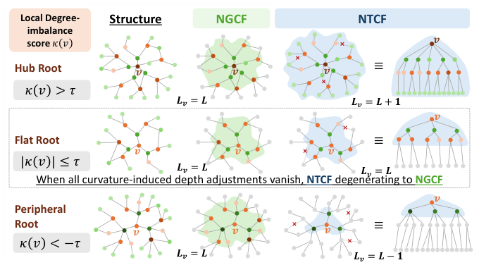
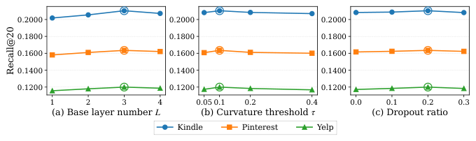

Neural Tree Collaborative Filtering: Rethinking Graph Collaborative Filtering as Tree Collaborative Filtering with Curvature-Aware Propagation Depth (神经树协同过滤：以曲率感知传播深度重思图协同过滤)
- 会议/期刊: CIKM 2026 (Short Paper)
- 作者与机构: Jinfeng Xu, Ziyue Peng, Shuo Yang, Jinze Li, Wenhao Yuan, Jian Chen, Shujie Li, Edith C. H. Ngai 等（香港大学、香港科技大学、北京理工大学）
- 推荐链路定位: 召回（GCF 骨干表征学习）
- 研究方向: 图神经网络与知识图谱推荐 / 自监督对比学习
- 论文原文: https://arxiv.org/abs/2608.10297v1
- 开源代码: https://github.com/Jinfeng-Xu/NTCF
TL;DR (1分钟核心速览)
GCF 长期对所有节点施加同一传播层数 \(L\)，但真实交互图局部几何高度异质：外围节点一两跳即被枢纽邻居"混匀"而过平滑，枢纽节点却因邻居稀疏而探索不足。NTCF 把每个节点的邻域重释为以自身为根的树，用 \(O(|\mathcal{E}|)\) 闭式局部度不平衡分数（离散 Ricci 曲率代理）为每节点分配 \(L\pm1\) 的深度，并在超出预算的层将节点重置回第 0 层表征。理论上 NTCF 严格包含 NGCF（\(\tau\to\infty\) 退化为 NGCF），且在深层层保持非零 Dirichlet 能量下界。三数据集 Full-Ranking 下 R@20 相对 LightGCN 提升约 1.2%–2.3%，作为即插即用骨干替换 LightGCN 可让 SimGCL/NLGCL 等 SSL 模型全线增益。
Background & Motivation (背景与核心矛盾)
- 主流范式: NGCF 以带特征变换与非线性激活的 GCN 做二部图消息传递，LightGCN 去掉变换与激活后成为绝大多数 GCF 与自监督推荐模型的默认骨干，二者均以全局超参 \(L\) 统一所有节点的传播深度。
- 前人局限: ① 外围节点（度数低于邻居均值）在一两跳内即聚合到已被枢纽高度混合的信号，继续加深只是重复平滑，加速过平滑；② 局部枢纽节点（度数高于邻居均值）的邻居本身偏外围，需要更深跳数才能触达有效协同信号，统一深度使其"探索不足"。
- 核心洞察 (Key Insight): 从单节点视角看，\(L\) 层 GCN 传播等价于在图上以该节点为根做 \(L\) 跳 BFS 展开的根树，聚合只依赖这棵树；因此"传播深度"本应是节点级属性而非全局超参。而节点与其邻居的度数失衡恰好刻画了"该树该多深"——这正是离散 Ricci 曲率的局部直觉。
- 本文切入点: 用闭式局部度不平衡分数替代需解最优传输的 Ollivier-Ricci 曲率，把曲率符号直接映射为深度调整量，实现"一节点一棵树"的曲率感知传播。
Method (核心方法设计)
1. 整体框架 (Overall Architecture)
NTCF 在预处理阶段一次性计算全图每个节点的曲率代理 \(\kappa(v)\) 并缓存，据此为每节点确定有效深度 \(L_v\in\{L-1,L,L+1\}\)；训练时以 \(L_{\max}=\max_v L_v\) 层二部图卷积（稀疏矩阵乘实现 NGCF 式更新）逐层传播，每层后施加曲率驱动的二值掩码：未耗尽深度预算的节点继续更新，已耗尽者被重置回第 0 层表征，但仍以第 0 层值向仍活跃的邻居供信，从而在保持二部图双向性的同时实现"每根一棵树"。最终按层拼接（默认）或曲率加权均值聚合得到用户/物品表征，内积打分，BPR 损失优化。
flowchart TD
A["二部交互图 G=(U∪I, E)"] --> B["闭式曲率代理 κ(v)（O(|E|) 预处理缓存）"]
B --> C["节点级深度 L_v = clip(L+Δ(v), 1)"]
C --> D["L_max 层二部图卷积 + 曲率掩码重置"]
D --> E["层拼接 / 曲率加权均值聚合"]
E --> F["内积打分 + BPR 损失"]
2. 关键设计拆解 (Key Designs)
-
局部度不平衡曲率代理（Local Degree-Imbalance Curvature）：精确 Ollivier-Ricci / Lin-Lu-Yau 曲率需逐边解最优传输，工业级图上不可行。NTCF 改用闭式分数 $\(\kappa(v)=\frac{\bar{d}_{\mathcal{N}(v)}-d(v)}{\bar{d}_{\mathcal{N}(v)}+d(v)+\epsilon},\quad \bar{d}_{\mathcal{N}(v)}=\tfrac{1}{|\mathcal{N}(v)|}\sum_{w\in\mathcal{N}(v)}d(w)\)$ 取值有界于 \([-1,1]\)，\(O(|\mathcal{E}|)\) 一次算完。直觉：\(\kappa<0\) 表示自身比邻居更"枢纽"，需更深树触达远端协同信号；\(\kappa>0\) 表示身处稠密簇外围，加深只会重复聚合已混匀信息、加速过平滑；\(\kappa\approx0\) 保持标准深度。该分数与 Ricci 曲率的"局部连通性相对失衡"语义一致，但免去传输求解。
-
曲率感知深度与掩码式树传播（Curvature-Aware Depth + Masked Propagation）：给定基础深度 \(L\) 与阈值 \(\tau\)， $\(L_v=\max\{L+\Delta(v),1\},\quad \Delta(v)=\begin{cases}+1,&\kappa(v)<-\tau\\ 0,&|\kappa(v)|\le\tau\\ -1,&\kappa(v)>+\tau\end{cases}\)$ 逐层更新为 \(\mathbf{E}^{(l+1)}=\mathbf{m}^{(l)}\odot\tilde{\mathbf{E}}^{(l+1)}+(1-\mathbf{m}^{(l)})\odot\mathbf{E}^{(0)}\)，其中 \(\mathbf{m}^{(l)}_v=\mathbb{I}[L_v>l]\)。关键细节：掩码只作用于节点自身状态，被掩掉的 \(v\) 仍以 \(\mathbf{e}^{(0)}_v\) 向活跃邻居供信——这正是"每根一棵树"与"保持二部图双向性"能同时成立的原因。\(\tau\) 控制曲率平坦带宽度，即被调整节点的比例。
-
训练目标、负采样与推理效率：损失为标准 BPR $\(\mathcal{L}=\sum_{(u,i_p,i_n)\in\mathcal{D}}-\ln\sigma_s(\hat{\mathbf{e}}_u^\top\hat{\mathbf{e}}_{i_p}-\hat{\mathbf{e}}_u^\top\hat{\mathbf{e}}_{i_n})+\lambda\|\Theta\|^2\)$ 负采样沿用 BPR 的均匀采样（每正样本配一负样本），无额外难负采样设计。复杂度：曲率预处理 \(O(|\mathcal{E}|)\) 一次缓存；每 epoch 与 NGCF 同为 \(O(L_{\max}\cdot|\mathcal{E}|\cdot d)\)，仅多 \(O(|\mathcal{V}|\cdot d)\) 的掩码开销，且 \(L_{\max}\le L+1\)，即训练成本最多比 NGCF 多一层消息传递，无循环性额外开销。
理论支撑（两条命题）：命题 1 证明当 \(\tau\ge\tau^\star=\max_v|\kappa(v)|\) 时所有 \(\Delta(v)=0\)、掩码恒为 1，NTCF 精确退化为 NGCF\(_L\)（关闭 Norm/Drop 时完全一致，开启时假设空间更大），故 NTCF 严格泛化 NGCF，构成表征能力下界。命题 2 在标准 \(\rho\)-Lipschitz 收缩假设下，令 \(\mathcal{D}_l(\mathbf{E})\) 为第 \(l\) 层 Dirichlet 能量，则 $\(\mathcal{D}_L(\mathbf{E}_{\text{ngcf}})\le\rho^{2L}\mathcal{D}_0(\mathbf{E}^{(0)}),\quad \mathcal{D}_L(\mathbf{E}_{\text{ntcf}})\ge\sum_{v\in\mathcal{V}^+}\sum_{w\in\mathcal{N}(v)}(\delta_v-\rho^LR_0)_+^2\)$ \(L\to\infty\) 时 NGCF 上界以 \(\rho^{2L}\to0\) 衰减，而 NTCF 下界升至 \(\sum_{v\in\mathcal{V}^+}\deg(v)\delta_v^2\)——正曲率节点被重置回第 0 层，为深层保留了判别性信息地板。
Experimental Setup & Evaluation Protocol (实验设置与评估协议)
- 数据集与预处理: Yelp 采用
15-core过滤，Kindle 与 Pinterest 采用5-core过滤：
| 数据集 | #Users | #Items | #Interactions | 稀疏度 | 特征/场景说明 |
|---|---|---|---|---|---|
| Kindle | 60,468 | 57,212 | 880,859 | 99.975% | Amazon Kindle 商店，最稀疏 |
| 55,188 | 9,912 | 1,445,622 | 99.736% | 图文社交兴趣，物品数最少 | |
| Yelp | 45,477 | 30,708 | 1,777,765 | 99.873% | 本地生活商户点评 |
- 数据划分与防穿越 (Splitting Strategy): 用户级
8:1:1比例划分（train/valid/test），沿用 LightGCN 及后续 GCF/SSL 工作的标准设定。 - 排名评测协议 (Ranking Protocol): 采用
Full-Ranking（全库未交互物品排序），指标为 Recall@{10,20,50} 与 NDCG@{10,20,50}，5 个随机种子取均值。 - 对比基线与超参设置: 骨干类基线 NCF、NGCF、LightGCN、UltraGCN、IMP-GCN、FKAN-GCF；兼容性实验将 SimGCL、LightGCL、RecDCL、NLGCL 的 LightGCN 骨干替换为 NTCF。统一 embedding 维度 \(d=64\)、Xavier 初始化、Adam 优化器；NTCF 固定 \(\lambda=10^{-4}\)，\(L\in\{1,2,3,4\}\)、\(\tau\in\{0.05,0.1,0.2,0.4\}\)、message dropout \(\in\{0.0,0.1,0.2,0.3\}\) 网格调参。
Key Experimental Results (实验关键数据)
1. 主实验对比 (Main Results)
| 数据集 / 指标 | NCF | NGCF | LightGCN | UltraGCN | IMP-GCN | FKAN-GCF | NTCF | Improv.% (vs 最强基线) |
|---|---|---|---|---|---|---|---|---|
| Kindle R@20 | 0.1583 | 0.1770 | 0.2080 | 0.2013 | 0.2057 | 0.2089 | 0.2104 | +0.72% |
| Kindle N@20 | 0.0850 | 0.0919 | 0.1117 | 0.1082 | 0.1101 | 0.1125 | 0.1137 | +1.07% |
| Pinterest R@20 | 0.1276 | 0.1428 | 0.1621 | 0.1588 | 0.1603 | 0.1614 | 0.1635 | +0.86% |
| Pinterest N@20 | 0.0621 | 0.0721 | 0.0830 | 0.0808 | 0.0814 | 0.0827 | 0.0838 | +0.96% |
| Yelp R@20 | 0.0885 | 0.1026 | 0.1163 | 0.1180 | 0.1182 | 0.1183 | 0.1200 | +1.44% |
| Yelp N@20 | 0.0486 | 0.0567 | 0.0652 | 0.0666 | 0.0662 | 0.0666 | 0.0669 | +0.45% |
| Yelp R@50 | 0.1654 | 0.1864 | 0.2016 | 0.2029 | 0.2017 | 0.2019 | 0.2036 | +0.34% |
（完整表含 R@10/R@50/N@10/N@50，NTCF 在全部 18 个指标格上均为最优。）
2. 消融实验 (Ablation Study)
| 变体 | Kindle R@20 | Kindle N@20 | Pinterest R@20 | Pinterest N@20 | Yelp R@20 | Yelp N@20 |
|---|---|---|---|---|---|---|
| NTCF (full) | 0.2104 | 0.1137 | 0.1635 | 0.0838 | 0.1200 | 0.0669 |
| w/o curvature (\(\tau\to\infty\)) | 0.1770 | 0.0919 | 0.1428 | 0.0721 | 0.1026 | 0.0567 |
| r/ mean agg. (Eq. 6 替代拼接) | 0.2090 | 0.1133 | 0.1626 | 0.0832 | 0.1187 | 0.0660 |
3. 关键实验发现 (Key Findings)
- 曲率机制是唯一主要增益来源，且与命题 1 数值吻合：
w/o curvature在三个数据集上分别回落到 0.1770 / 0.1428 / 0.1026（R@20），与 NGCF 基线数值逐位一致，实证验证了 \(\tau\to\infty\) 时 NTCF 精确退化为 NGCF；曲率调整带来的 R@20 绝对增益为 +3.34 / +2.07 / +1.74 个百分点，远超其余所有骨干改进（FKAN-GCF 相对 LightGCN 仅 +0.09 / −0.07 / +0.20）。 - 拼接聚合优于曲率加权均值，但差距极小：
r/ mean agg.相对完整模型 R@20 仅下降 0.14 / 0.09 / 0.13 个百分点，说明增益主要来自"深度自适应"而非"聚合方式"；同时该变体仍显著优于w/o curvature，佐证命题 2 的严格改进方向。 - NTCF 是 SSL 模型的即插即用骨干升级：替换 LightGCN 后，SimGCL 在 Yelp 上 R@10 由 0.0908 升至 0.0924、N@10 由 0.0673 升至 0.0689；NLGCL 在 Pinterest 上 R@10 由 0.1148 升至 0.1170、N@10 由 0.0760 升至 0.0773；四个 SSL 方法在 3 数据集 × 6 指标共 72 格上全部正增益，说明节点级几何自适应与对比学习目标正交可叠加。

超参分析（图 2）显示三数据集最优配置一致为 \(L=3\)、\(\tau=0.1\)、dropout \(=0.2\)；\(\tau=0.4\) 时 NTCF 塌缩回 NGCF 并掉点，印证"需保留非平凡比例的曲率调整节点"；最优邻域内 R@20 波动小于 0.5 个百分点，鲁棒性良好。
Highlights, Limitations & Rating (亮点、对比与审稿评价)
- 与代表作对比 (vs. Prior Work): 与 NGCF/LightGCN 的本质区别在于把"深度"从全局超参降为节点级属性，且用 \(O(|\mathcal{E}|)\) 闭式曲率代理替代最优传输曲率，工程可落地；与 IMP-GCN 的"按子图分组传播"不同，NTCF 不切分图、不引入额外分组超参，仅靠逐层掩码实现差异化深度，且保持二部图双向消息流；与 UltraGCN 的"免消息传递"路线正交——NTCF 仍走显式传播，但让传播深度随局部几何自适应。
- 可迁移亮点: ① 掩码重置机制（超预算节点回退第 0 层但仍向邻居供信）可直接移植到任何多层 GNN 推荐骨干，实现"每节点早停"而无需改图结构；② 闭式度不平衡分数可作为轻量图几何描述子，用于冷启动节点诊断、层数选择或图增广的采样权重。
- 审稿级局限批判: ① 深度调整仅限 \(\pm1\) 且依赖单一度数统计量，对加权图、时序图或带属性相似度的图，\(\kappa(v)\) 的曲率语义可能失真，缺少与真实 Ollivier-Ricci 曲率的相关性验证；② 增益幅度偏小（R@20 相对最强基线 +0.3%–1.4%），且仅在三个中等规模公开集上验证，缺少工业级千万边图上的效率与效果证据，也未报告与 \(L\) 增大时的显存/时延实测曲线。
- 四维评分: 创新性 ⭐⭐⭐⭐ | 实验扎实度 ⭐⭐⭐ | 方法清晰度 ⭐⭐⭐⭐⭐ | 落地价值 ⭐⭐⭐⭐